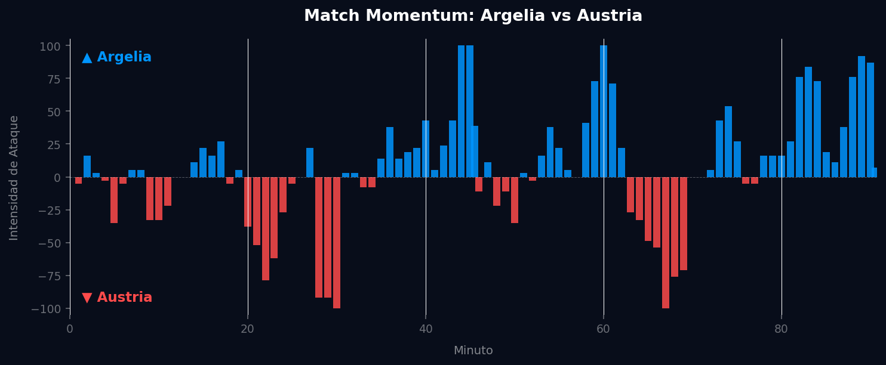
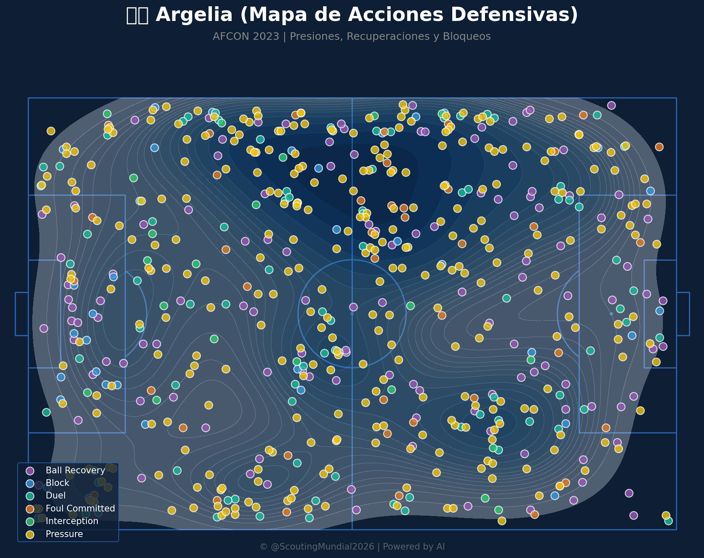
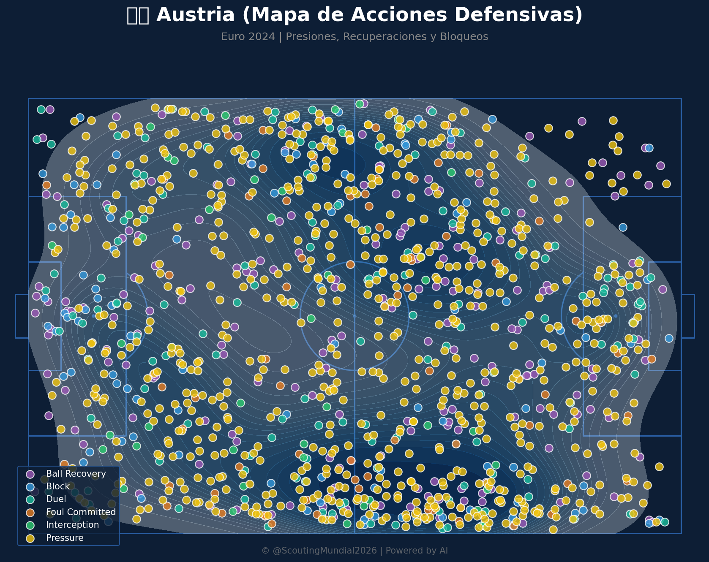
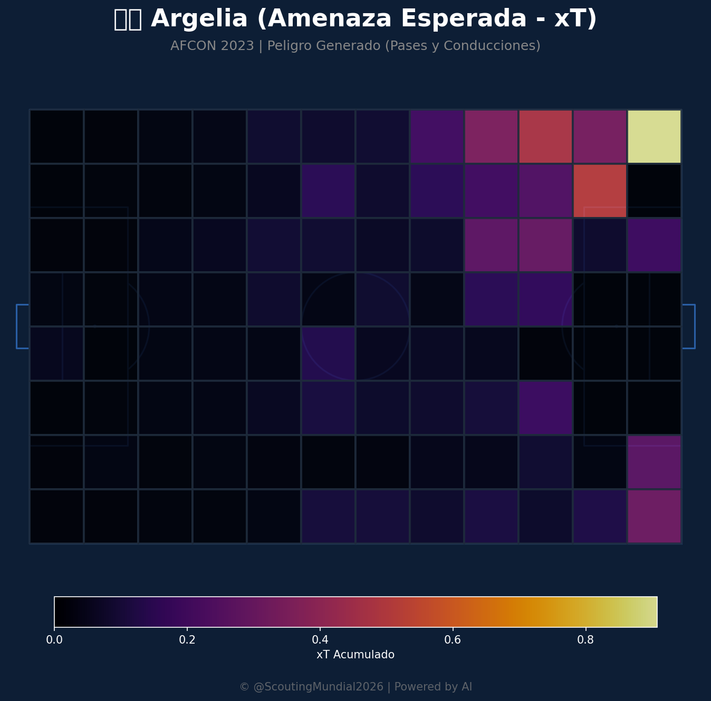
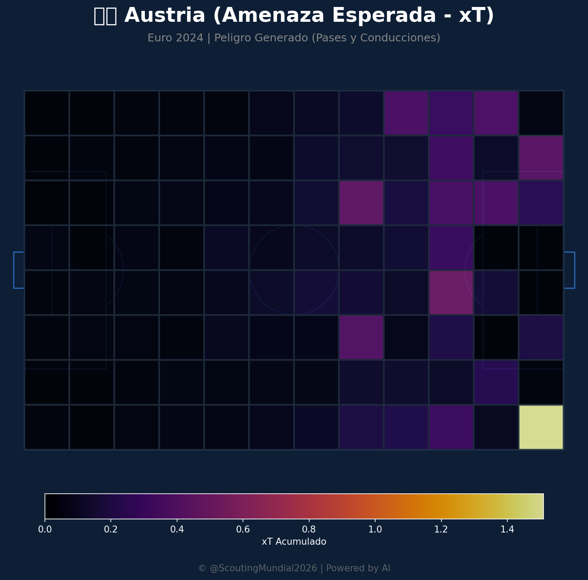
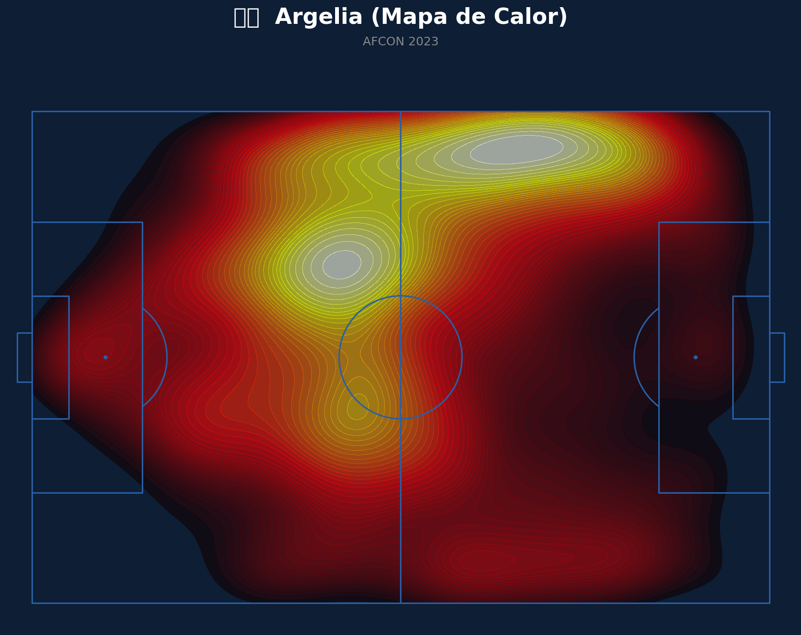
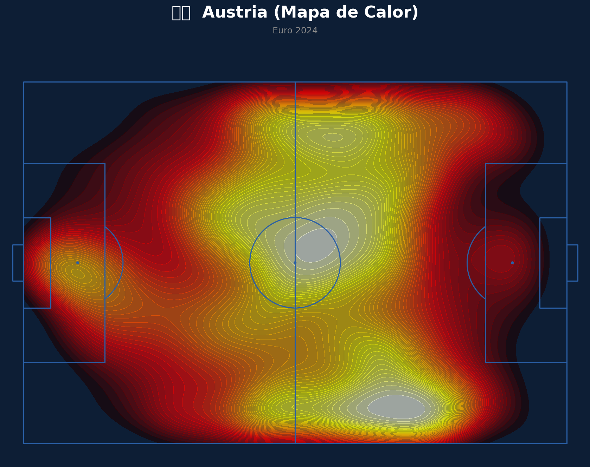
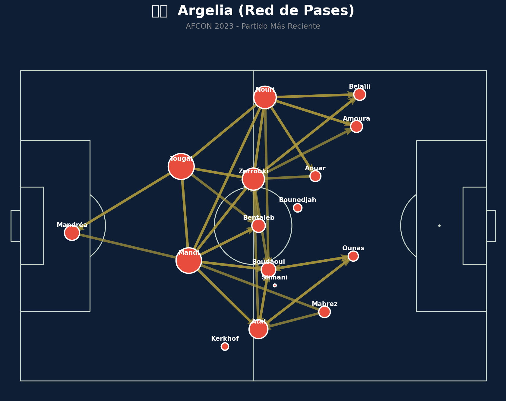
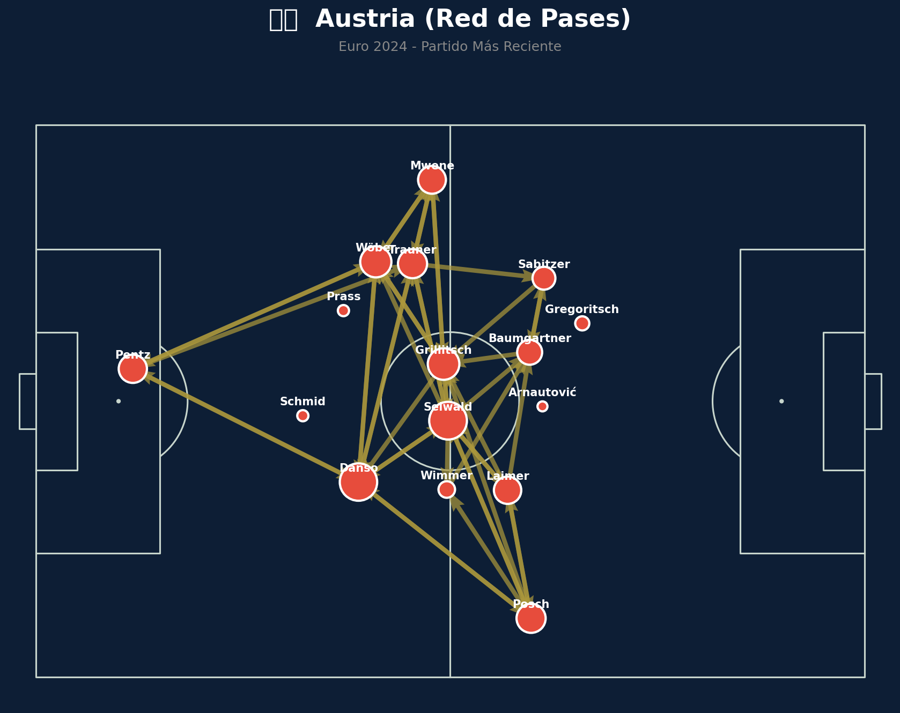

Grupo J
 Austria
Austria
Argelia vs Austria
📅 2026-06-27 · 🕒 22:00 (Local)
Argelia

3 - 3
FINALIZADO
Austria
📅 2026-06-27 · 🕒 22:00 (Local)
Austria
El duelo entre Argelia y Austria fue un auténtico festival de goles y emociones, culminando en un vibrante empate 3-3 que mantuvo a los aficionados al borde de sus asientos. Austria tomó la iniciativa con un gol temprano tras una presión alta asfixiante, pero Argelia demostró su resiliencia al empatar antes del descanso con una jugada individual brillante. La segunda mitad se abrió con un fulgurante ataque austríaco que les devolvió la ventaja, solo para ver cómo Argelia, impulsada por su afición y un espíritu combativo, nivelaba el marcador nuevamente. Cuando parecía que Austria había asestado el golpe definitivo con un tercer tanto a pocos minutos del final, Argelia, en un despliegue de coraje, encontró el gol del empate en el tiempo de descuento, sellando un reparto de puntos que dejó sensaciones encontradas en ambos bandos.
El flujo del Match Momentum en este encuentro fue un fiel reflejo de su dramatismo. Austria dominó la intensidad de ataque en un 35.1% del partido, alcanzando su pico máximo de 100.00 en el minuto 30', coincidiendo con el momento en que abrieron el marcador y ejercieron una presión abrumadora. Este período de alta intensidad austríaca puso en aprietos a la defensa argelina. Sin embargo, Argelia mostró una increíble capacidad de reacción, dominando la intensidad el 56.4% del partido, con su punto álgido de 100.00 en el minuto 44', justo antes del descanso, momento en que logró el empate y se volcó al ataque.
El Match Point (Punto Crítico) del partido se situó sin duda en el minuto 89', cuando Austria anotó el 3-2, lo que parecía ser el gol de la victoria. Este gol desmoralizador normalmente sentencia un partido, pero la inmediata reacción de Argelia en el descuento para el 3-3 demostró una fortaleza mental excepcional, transformando ese punto crítico de probable derrota en un acto de supervivencia y heroísmo, cambiando el rumbo emocional y el resultado final del encuentro.

Argelia demostró una dualidad táctica fascinante. Ofensivamente, su capacidad de transición rápida y el talento individual de sus extremos y mediapuntas fueron sus mayores virtudes, permitiéndoles generar peligro constante y, lo más importante, empatar el partido en tres ocasiones. Su resiliencia mental es encomiable, negándose a darse por vencidos incluso cuando estaban contra las cuerdas. Sin embargo, defensivamente, mostraron fragilidad, especialmente en la contención de los mediocampistas ofensivos de Austria y en la gestión de las segundas jugadas tras centros laterales. La coordinación en la zaga y la presión en el centro del campo necesitan ajustes urgentes si quieren aspirar a una mejor actuación en el futuro.
Austria presentó un esquema táctico bien estructurado, con una clara intención de presionar alto y explotar las bandas con velocidad y centros precisos. Su intensidad inicial fue notable, permitiéndoles tomar la delantera y dictar el ritmo en ciertos tramos del partido. La creatividad de su mediocampo ofensivo generó constantes rupturas, resultando en tres goles. Sin embargo, su principal falla radicó en la incapacidad de mantener la solidez defensiva y la concentración en momentos clave. La gestión de las ventajas en el marcador fue deficiente, permitiendo a Argelia regresar al partido en repetidas ocasiones, lo que sugiere una vulnerabilidad en la cobertura de espacios centrales y en la anticipación a las transiciones rápidas del rival.
El duelo táctico entre ambos entrenadores fue una montaña rusa de ajustes y contra-ajustes. Mientras el técnico austríaco apostó por un plan de juego agresivo y directo, buscando desestabilizar desde el inicio, su contraparte argelina priorizó la resiliencia y la explosividad en transiciones. Ambos equipos exhibieron sus virtudes ofensivas con claridad, pero también expusieron debilidades significativas en la fase defensiva, incapaces de asegurar sus ventajas. El marcador final de 3-3 es, por tanto, un veredicto justo y lógico. Refleja un partido donde la ambición de ataque superó a la solvencia defensiva de ambos lados, y donde ninguno de los equipos tuvo la autoridad táctica o la sangre fría para cerrar el encuentro, resultando en un reparto de puntos que encapsula perfectamente la naturaleza impredecible y emocionante del fútbol de élite.







